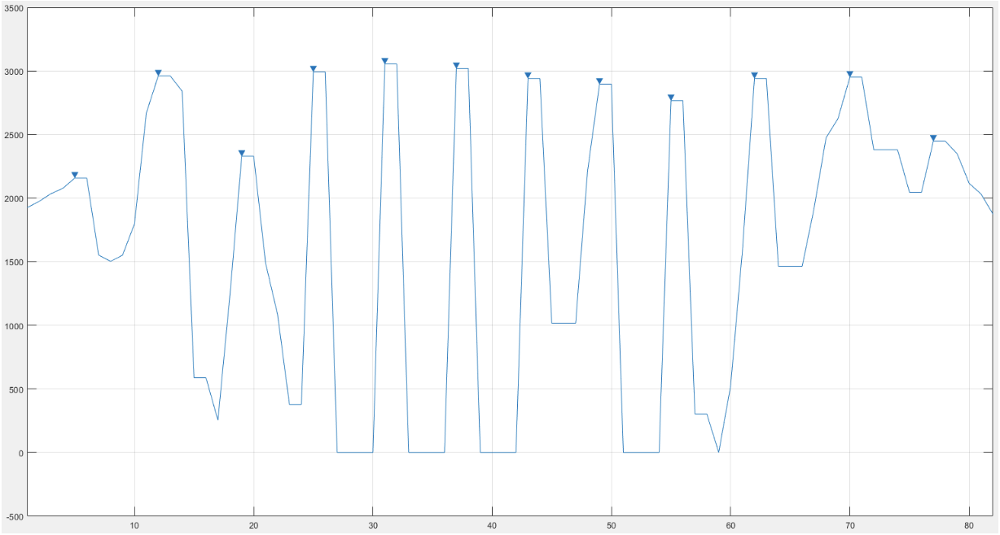

Sensole
more affordable, portable, and intuitive gait monitoring
Welcome!
Sensole is an insole biometric monitoring device for Parkinson’s patients that acts as both a bridge between the doctor’s office and a patient’s daily activities, and as a research tool to further understand potential diagnosis patterns and disease progression. At the same time, Sensole empowers patients to take part in their own healthcare.
Patients
Why Sensole?
Currently, patients who suffer from neurological diseases impacting gait such as parkinsons, are subject to objective procedures in the tracking of the disease. One common procedure is the Time Up and Go test (TUG) where doctor's translate results into
levodopa prescriptions and physical therapy regimens, usually having to be adjusted through trial and error to find what works best for the patient.
At Sensole we believe with our technology we can provide in depth gait monitoring
which can then analyze to provide actionable metrics that clinicians can use to understand how their patient is doing at any given time.
How to use:
- Place the shoe-shaped padding in the sole of your shoe.
- Put your shoe on as you would normally.
- Walk as you would normally, and the data will start collecting.
Clinicians
Who are we?
Sensole is a product spawned by UD researchers who lacked a way to collect accurate and natural gait data from Parkinson’s patients they were studying. Once the idea was formed the founders worked with the University of Delaware’s Office of Economic Innovation and Partnerships program to create a team of Undergraduate students to bring our idea it fruition. After countless exploration, prototypes, and testing we are now running clinical trials validating Sensoles unique value.
Our Technology
Our device tracks the patient's steps and then collects the data for the clinicians to be able to view. The clinicians can use the charts in order to better understand the freezing of gait that the patient may be experiencing, and then determine what the appropriate next steps should be.
